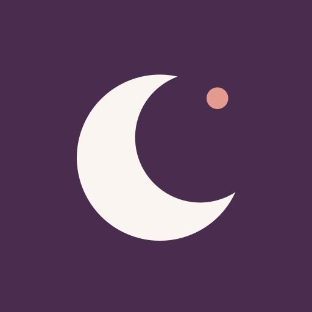
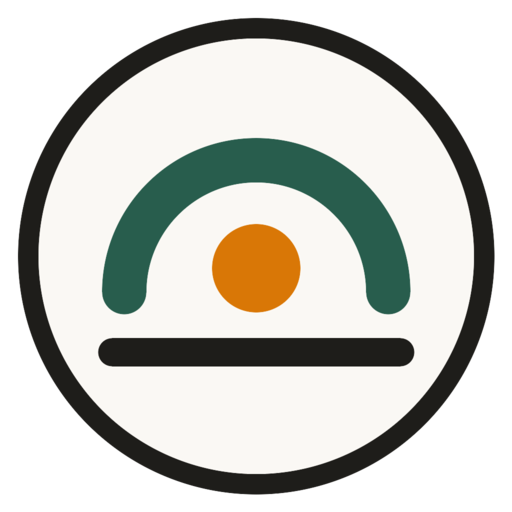

Pilmil Studio · Dossier de presse
Pilmil Studio en bref
Pilmil Studio publie six applis gratuites et libres pour Android, sous licence MPL-2.0. Elles fonctionnent sans compte, sans traceur et sans permission d'accès à Internet. Chaque fonction repose sur une étude publiée ou sur un choix de conception assumé, et chaque site indique lequel.
En chiffres
- 6applis présentées dans ce dossier
- MPL-2.0licence du code de chaque appli
- 0appli qui déclare la permission d'accès à Internet dans son fichier de configuration
- 6langues pour Respire, Sommelle et Lunaison (fr, en, de, es, pl, uk)
- 2langues pour Sillon et Sauve (fr, en)
Les six applis
-

Respire
À quoi elle sert : elle place une pause de respiration devant les applis que l'on ouvre sans y penser, puis laisse le choix de les ouvrir ou de les fermer.
Sur quoi elle s'appuie : « Chaque fonction s’appuie sur une étude sur l’usage excessif du smartphone ou sur un choix de conception assumé. »
Catégorie : bien-être numérique.
-
Sommelle
À quoi elle sert : elle accompagne l'insomnie pendant six à huit semaines, avec un agenda du sommeil, des bilans et de l'aide pour les nuits difficiles. Ce n'est pas un dispositif médical.
Sur quoi elle s'appuie : « Un accompagnement inspiré de la thérapie cognitive et comportementale de l'insomnie ».
Catégorie : sommeil.
-

Lunaison
À quoi elle sert : elle suit les règles, les symptômes et l'humeur, décrit ce qui se passe à chaque phase du cycle et estime l'arrivée des prochaines règles. Elle s'adresse aux 13 ans et plus. Ce n'est pas un dispositif médical, ni une méthode de contraception.
Sur quoi elle s'appuie : « chaque conseil de santé renvoie à une étude publiée, et quand les preuves sont faibles, l'appli le dit ».
Catégorie : santé.
-

Sillon
À quoi elle sert : elle indique ce qu'il y a à faire au potager à chaque quinzaine, aide à organiser les parcelles et repère les maladies, sans réseau.
Sur quoi elle s'appuie : « Les semis, repiquages et récoltes de la quinzaine, calculés à partir de votre date de dernières gelées. »
Catégorie : mode de vie.
-
Sauve
À quoi elle sert : elle guide pas à pas, à la voix et par vibrations, face à un arrêt cardiaque, un étouffement, une hémorragie ou une perte de connaissance. C'est un aide-mémoire : il ne remplace pas une formation aux premiers secours, et ses consignes n'ont pas encore été validées par un formateur.
Sur quoi elle s'appuie : « Les conduites à tenir s'appuient sur les recommandations de l'European Resuscitation Council (ERC 2021) et sur les référentiels nationaux de premiers secours (PSC1). »
Catégorie : santé.
-

Fredonne
À quoi elle sert : elle permet d'écrire une mélodie à une voix au clavier, de l'écouter aussitôt, de la transposer pour un instrument transpositeur et d'exporter une partition en PDF, hors ligne.
Sur quoi elle s'appuie : « Pour offrir un rendu sonore naturel, une gravure lisible et une vérification théorique rigoureuse sans aucune bibliothèque propriétaire ni banque d'échantillons lourde, le moteur de Fredonne s'appuie sur la littérature scientifique en acoustique musicale et en musicologie computationnelle. »
Catégorie : musique.
Disponibilité
Les applis sont disponibles en APK, depuis la page des versions de chaque dépôt GitHub. Les versions iPhone sont en cours de développement.
Visuels
Icônes du studio et des applis, dans ce dépôt. Image de partage du site : img/og-pilmil-1200x630.jpg.

img/pilmil-logo-512.pngimg/apps/respire.pngimg/apps/sommelle.pngimg/apps/lunaison.pngimg/apps/sillon.pngimg/apps/sauve.pngimg/apps/fredonne.png
Captures d'écran et visuels de chaque appli, dans son dépôt (github.com/Pilmil-Studio) :
- Respire :
docs/marketing/captures/(fr),docs/marketing/captures/en/. - Sommelle :
docs/marketing/captures/fr/etdocs/marketing/captures/en/. - Lunaison :
docs/marketing/captures/fr/etdocs/marketing/captures/en/. - Sillon :
docs/captures/. Les captures ont été faites avec des données d'exemple. - Sauve :
docs/marketing/captures/. - Fredonne :
docs/captures/, etdocs/store/pour l'icône et la bannière.
Icône et bannière des fiches Google Play : fastlane/metadata/android/fr-FR/images/ dans chaque dépôt. Visuel de partage en français : docs/marketing/out/fr/social.png, pour toutes les applis sauf Fredonne.
Questions fréquentes de journalistes
Pourquoi des applis gratuites et libres ?
Les applis sont gratuites, sans publicité ni achat intégré, et leur code est publié sous licence MPL-2.0, ce qui permet à chacun de le lire et de le vérifier. Lunaison annonce que toutes ses fonctions utiles restent accessibles sans abonnement.
Pourquoi fonctionner sans Internet ?
Les six applis n'ont pas la permission d'accès à Internet, si bien que ce que l'on y note reste sur le téléphone. Cette absence se vérifie dans le fichier de configuration de chaque appli, sans avoir à croire une promesse.
Quelle place pour l'IA ?
Une partie du code est écrite avec l'aide d'un assistant d'intelligence artificielle, puis relue, testée sur appareil réel et maintenue par les membres de l'association. Respire, Sommelle et Lunaison n'embarquent aucune intelligence artificielle, et le diagnostic par photo de Sillon fonctionne sur l'appareil comme une aide indicative.
Comment sont choisies les sources ?
Chaque fonction s'appuie sur une étude publiée ou sur un choix de conception assumé, et chaque site indique lequel. Lunaison précise en plus que, lorsque les preuves sont faibles, l'appli le dit.
Comment contribuer ou signaler une erreur ?
Pour signaler une erreur ou proposer un besoin, on peut ouvrir une issue sur le dépôt GitHub de l'appli ou écrire à pilmil.studio@proton.me. Le code étant sous licence MPL-2.0, chacun peut aussi le lire, le réutiliser et le modifier.
Texte court à citer
Pilmil Studio est une association loi 1901 (déclaration en cours). Elle publie six applis gratuites et libres pour Android, sous licence MPL-2.0 : elles fonctionnent sans compte, sans traceur et sans permission d'accès à Internet. Le code est écrit avec l'aide d'un assistant d'intelligence artificielle, puis relu et maintenu par ses membres.
Contact
Écrire à pilmil.studio@proton.me.
Fabrication
Pilmil Studio est une association loi 1901 (déclaration en cours), et le code est écrit avec l'aide d'un assistant d'intelligence artificielle puis relu et maintenu par ses membres.